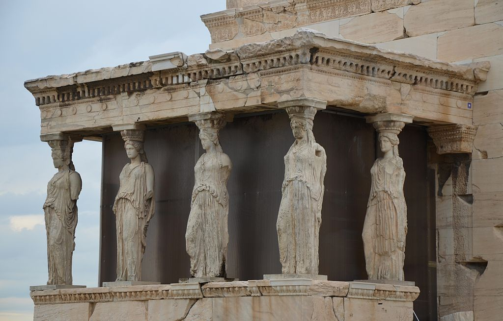

<head>
<meta charset="UTF-8" />
<meta name="keywords" content="drawing, painting" />
<meta name="description" content="drawings by Sunjy" />
<title>Sunjy</title>
<link rel="shortcut icon" type="image/x-icon" href="../../mImages/mCommon/favicon.ico" media="screen" />
<link rel="stylesheet" type="text/css" href="../../mCsses/mCommon/mCssA.css" />
<link rel="stylesheet" type="text/css" href="../../mCsses/mCommon/mCssB.css" />
<link rel="stylesheet" type="text/css" href="../../mCsses/mCommon/mCssC.css" />
<link rel="stylesheet" type="text/css" href="../../mCsses/mCommon/mCssD.css" />
<link rel="stylesheet" type="text/css" href="../../mCsses/mContent/mCssA.css" />
<link rel="stylesheet" type="text/css" href="../../mCsses/mContent/mCssB.css" />
<link rel="stylesheet" type="text/css" href="../../mCsses/mContent/mCssC.css" />
<link rel="stylesheet" type="text/css" href="../../mCsses/mContent/mCssD.css" />
</head>
<script type="text/javascript" src="../../mScripts/mContent/mContentAA.js" /></script>
<script type="text/javascript" src="../../mScripts/mContent/mContentAB.js" /></script>
<script type="text/javascript" src="../../mScripts/mContent/mContentAC.js" /></script>
<script type="text/javascript" src="../../mScripts/mContent/mContentAD.js" /></script>
<script type="text/javascript"></script> 
<script type="text/javascript">
document.write('<div class="mImgAbsolute"></div>');
/*
document.write('<p class="mFontSizeBColor" />From a white paper...</p>');
document.write('<table class="center"><tr><td>');
document.write('');
document.write('</td></tr></table>');
*/
</script>


<script type="text/javascript">
document.write('<p class="mFontSizeBColor" />Caryatids of Erechtheion </p>');
document.write('<p class="mFontSizeSColor" />Caryatids of Erechtheion – the most Beautiful of all Columns<br><br>A Caryatid is a name given to a column which is in the form of a standing female figure. The most famous Caryatids are from the Erechtheion on the Acropolis of Athens. The Erechtheion is a marble temple building in the Ionic order and was considered the most sacred part of the Acropolis.<br><br>At the south porch of the Erechtheion, the roof was supported by six statues of maidens known as the Caryatids. An ancient inscription of the Erechtheion refers to the Caryatids simply as Korai (maidens). The Greek term karyatides means “maidens of Karyai,” an ancient town of Peloponnese.<br><br>Initially, there were six maiden statues, today at the site you can only see five. One of the Caryatids was removed by Lord Elgin in 1801 and is today located in the British Museum. The Caryatids at the Erechtheum on the Acropolis of Athens are copies, as the five remaining originals are in the Acropolis Museum for their protection, conservation, and restoration.<br><br>The Caryatids of Erechtheum were sculptured from Pentelic marble. They wear a peplos pinned on each shoulder. The hair of the Korai (maidens) is braided and falls in like a thick rope down her back. They carry the architectural capital like a basket on her head. The weight she bears is taken on the right leg, and the other leg is bent forward with the drapery molded to it.<br><br></p>');
document.write('<table class="center" /><tr><td>');
document.write('<br>A Caryatid is a name given to a column which is in the form of a standing female figure. The most famous Caryatids are from the Erechtheion on the Acropolis of Athens. The Erechtheion is a marble temple building in the Ionic order and was considered the most sacred part of the Acropolis.<br><br>At the south porch of the Erechtheion, the roof was supported by six statues of maidens known as the Caryatids. An ancient inscription of the Erechtheion refers to the Caryatids simply as Korai (maidens). The Greek term karyatides means “maidens of Karyai,” an ancient town of Peloponnese.<br><br>Initially, there were six maiden statues, today at the site you can only see five. One of the Caryatids was removed by Lord Elgin in 1801 and is today located in the British Museum. The Caryatids at the Erechtheum on the Acropolis of Athens are copies, as the five remaining originals are in the Acropolis Museum for their protection, conservation, and restoration.<br><br>The Caryatids of Erechtheum were sculptured from Pentelic marble. They wear a peplos pinned on each shoulder. The hair of the Korai (maidens) is braided and falls in like a thick rope down her back. They carry the architectural capital like a basket on her head. The weight she bears is taken on the right leg, and the other leg is bent forward with the drapery molded to it.<br><br>" />');
document.write('</td></tr></table>');
document.write('<p class="mFontSizeBColor" />Caryatids of Erechtheion – the most Beautiful of all Columns</p>');
document.write('<p class="mFontSizeSColor" />Initially, there were six maiden statues, today at the site you can only see five. </p>');
document.write('<table class="center" /><tr><td>');
document.write('');
document.write('</td></tr></table>');
document.write('<p class="mFontSizeBColor" />Caryatids of Erechtheion – Artistic Genius</p>');
document.write('<p class="mFontSizeSColor" />Initially, there were six maiden statues, today at the site you can only see five. One of the Caryatids was removed by Lord Elgin in 1801 and is today located in the British Museum. </p>');
document.write('<table class="center" /><tr><td>');
document.write('');
document.write('</td></tr></table>');
document.write('<p class="mFontSizeBColor" />Below is a painting titled “The Prostasis (portico) of the Caryatids on the Erechtheion” painted in 1877 by Werner Carl-Friedrich (1808 – 1894).  </p>');
document.write('<p class="mFontSizeSColor" />This painting was made after the liberation of Greece from the Ottoman Empire. The first tasks the new Greek State undertook was to clear the Turkish dwellings from the Acropolis hill and reveal the classical monuments of antiquity. This depiction is an early modern view of the Caryatids of Erechtheum following the restoration of the site without all the later additions.<br><br>The Romans copied the Erechtheion caryatids, installing copies in the Forum of Augustus and the Pantheon in Rome, and at Hadrian’s Villa at Tivoli. In Early Modern times, the practice of integrating caryatids into building facades was revived, and in interiors, they began to be employed in fireplaces.<br><br>In the 16th century, caryatids became a fixture in the decorative vocabulary of Northern Mannerism. In the early 17th century, examples appear in Jacobean interiors in England. Caryatids remained part of the German Baroque vocabulary and were refashioned in more restrained and “Grecian” forms by neoclassical architects and designers. An interesting example is the four terracotta caryatids on the porch of St Pancras New Church, London (1822).<br><br>Today the original Caryatids of Erechtheum are not at the Temple on the Acropolis; they are in the Acropolis Museum for their protection, conservation, and restoration.<br><br>Questions about the Caryatids of Erechtheion<br>•What was the function of the Erechtheion? ◦The Erechtheion is an ancient Greek temple on the Acropolis of Athens in Greece. It was dedicated to both Athena and Poseidon. The Erectheum was associated with some of the most ancient and holy relics of the Athenians.<br><br>•What do the caryatids represent? ◦A caryatid is a sculpted female figure serving as architectural support elements. A caryatid took the place of a column or a pillar supporting an entablature on her head. The Greek term karyatides means “maidens of Karyai,” an ancient town of Peloponnese.<br><br>•Where Are The original caryatids? ◦Five of the Caryatids are protected in the Acropolis Museum. One can be found in the British Museum, London.  The Caryatids now on the acropolis are replicas.<br><br></p>');
document.write('<table class="center" /><tr><td>');
document.write('<br>The Romans copied the Erechtheion caryatids, installing copies in the Forum of Augustus and the Pantheon in Rome, and at Hadrian’s Villa at Tivoli. In Early Modern times, the practice of integrating caryatids into building facades was revived, and in interiors, they began to be employed in fireplaces.<br><br>In the 16th century, caryatids became a fixture in the decorative vocabulary of Northern Mannerism. In the early 17th century, examples appear in Jacobean interiors in England. Caryatids remained part of the German Baroque vocabulary and were refashioned in more restrained and “Grecian” forms by neoclassical architects and designers. An interesting example is the four terracotta caryatids on the porch of St Pancras New Church, London (1822).<br><br>Today the original Caryatids of Erechtheum are not at the Temple on the Acropolis; they are in the Acropolis Museum for their protection, conservation, and restoration.<br><br>Questions about the Caryatids of Erechtheion<br>•What was the function of the Erechtheion? ◦The Erechtheion is an ancient Greek temple on the Acropolis of Athens in Greece. It was dedicated to both Athena and Poseidon. The Erectheum was associated with some of the most ancient and holy relics of the Athenians.<br><br>•What do the caryatids represent? ◦A caryatid is a sculpted female figure serving as architectural support elements. A caryatid took the place of a column or a pillar supporting an entablature on her head. The Greek term karyatides means “maidens of Karyai,” an ancient town of Peloponnese.<br><br>•Where Are The original caryatids? ◦Five of the Caryatids are protected in the Acropolis Museum. One can be found in the British Museum, London.  The Caryatids now on the acropolis are replicas.<br><br>" />');
document.write('</td></tr></table>');
</script>


